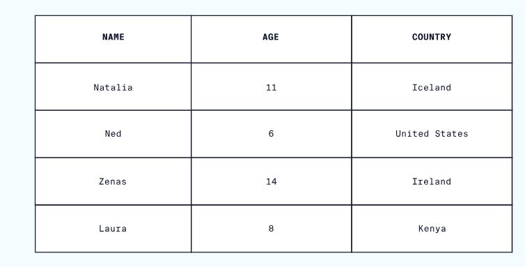

Creating Usage Funnels
Visitors to Codecademy’s website follow a simple workflow:
- Browse items available for sale
- Click an icon to begin the checkout process
- Enter payment information to complete their purchase
Not all users who browse on the website will find something that they like enough to checkout, and not all users who begin the checkout process will finish entering their payment information to make a purchase.
This type of multi-step process where some users leave at each step is called a funnel.
Catherine wants to determine what percent of users make it through each step of the funnel so that she can recommend improvements to Codecademy’s website. Catherine is going to combine data from three different tables:
browse - gives the timestamps of users who visited different item description pages checkout - gives the timestamps of users who visited the checkout page purchase - gives the timestamps of when users complete their purchase
Using SQL, she finds that 24% of all users who browse move on to checkout. 89% of those who reach checkout purchase.
User Churn
Determining Web Traffic Attribution
Catherine’s boss asks her to analyze how users are finding Codecademy’s websites using UTM Parameters. UTM Parameters are special tags that site owners add to their pages to track what website a user was on before they reach the website. For instance:
If a user found Codecademy’s website through Google search, the table page_visits might have utm_source set to ‘google’. If a different user clicked a Facebook ad to get to Codecademy’s website, then their row in page_visits might have utm_source as ‘facebook’.
Say we want to know how many visits come from each utm_source.
Q. What is the most common source of traffic to Codecademy’s website? A. nytimes
Relational Database Management System
What is a Database?
A database is a set of data stored in a computer. This data is usually structured in a way that makes the data easily accessible.
What is a Relational Database?
A relational database is a type of database. It uses a structure that allows us to identify and access data in relation to another piece of data in the database. Often, data in a relational database is organized into tables.
Tables: Rows and Columns
Tables can have hundreds, thousands, sometimes even millions of rows of data. These rows are often called records.
Tables can also have many columns of data. Columns are labeled with a descriptive name (say, age for example) and have a specific data type.
For example, a column called age may have a type of INTEGER (denoting the type of data it is meant to hold).
 In the table above, there are three columns (name, age, and country).
The name and country columns store string data types, whereas age stores integer data types. The set of columns and data types make up the schema of this table.
The table also has four rows, or records, in it (one each for Natalia, Ned, Zenas, and Laura).
What is a Relational Database Management System (RDBMS)?
A relational database management system (RDBMS) is a program that allows you to create, update, and administer a relational database. Most relational database management systems use the SQL language to access the database.
What is SQL?
SQL (Structured Query Language) is a programming language used to communicate with data stored in a relational database management system. SQL syntax is similar to the English language, which makes it relatively easy to write, read, and interpret.
Many RDBMSs use SQL (and variations of SQL) to access the data in tables. For example, SQLite is a relational database management system. SQLite contains a minimal set of SQL commands (which are the same across all RDBMSs). Other RDBMSs may use other variants.
(SQL is often pronounced in one of two ways. You can pronounce it by speaking each letter individually like “S-Q-L”, or pronounce it using the word “sequel”.)
Popular Relational Database Management Systems
SQL syntax may differ slightly depending on which RDBMS you are using. Here is a brief description of popular RDBMSs:
MySQL is the most popular open source SQL database. It is typically used for web application development, and often accessed using PHP.
The main advantages of MySQL are that it is easy to use, inexpensive, reliable (has been around since 1995), and has a large community of developers who can help answer questions.
Some of the disadvantages are that it has been known to suffer from poor performance when scaling, open source development has lagged since Oracle has taken control of MySQL, and it does not include some advanced features that developers may be used to.
PostgreSQL is an open source SQL database that is not controlled by any corporation. It is typically used for web application development.
PostgreSQL shares many of the same advantages of MySQL. It is easy to use, inexpensive, reliable and has a large community of developers. It also provides some additional features such as foreign key support without requiring complex configuration.
The main disadvantage of PostgreSQL is that it can be slower in performance than other databases such as MySQL. It is also slightly less popular than MySQL.
For more information about PostgreSQL including installation instructions, read this article.
Oracle Corporation owns Oracle Database, and the code is not open sourced.
Oracle DB is for large applications, particularly in the banking industry. Most of the world’s top banks run Oracle applications because Oracle offers a powerful combination of technology and comprehensive, pre-integrated business applications, including essential functionality built specifically for banks.
The main disadvantage of using Oracle is that it is not free to use like its open source competitors and can be quite expensive.
Microsoft owns SQL Server. Like Oracle DB, the code is close sourced.
Large enterprise applications mostly use SQL Server.
Microsoft offers a free entry-level version called Express but can become very expensive as you scale your application.
SQLite is a popular open source SQL database. It can store an entire database in a single file. One of the most significant advantages this provides is that all of the data can be stored locally without having to connect your database to a server.
SQLite is a popular choice for databases in cellphones, PDAs, MP3 players, set-top boxes, and other electronic gadgets. The SQL courses on Codecademy use SQLite.
For more info on SQLite, including installation instructions, read this article.
Using An RDBMS On Codecademy
On Codecademy, we use both SQLite and PostgreSQL. While this may sound confusing, don’t worry! We want to stress that the basic syntax you will learn can be used in both systems. For example, the syntax to create tables, insert data into those tables, and retrieve data from those tables are all identical. That’s one of the nice parts of learning SQL — by learning the fundamentals with one RDBMS, you can easily begin work in another.
That being said, let’s take a look at some of the more subtle details:
File extensions — when working with databases on Codecademy, take a look at the name of the file you’re writing in. If your file ends in .sqlite, you’re using a SQLite database. If your file ends in .sql, you’re working with PostgreSQL.
Data types — You’ll learn about data types very early into learning a RDBMS. One thing to note is that SQLite and PostgreSQL have slightly different data types. For example, if you want to store text in a SQLite database, you’ll use the TEXT data type. If you’re working with PostgreSQL, you have many more options. You could use varchar(n), char(n), or text. Each type has its own subtle differences. This is a good example of PostgreSQL being slightly more robust than SQLite, but the core concepts remaining the same.
Built-in tables — As you work your way through more complicated lessons on databases, you’ll start to learn how to access built-in tables. For example, if you take our lesson on indexes, you’ll learn how to look at the table that the system automatically creates to keep track of what indexes exist. Depending on which RDBMS system you are using (in that lesson we’re using PostgreSQL), the syntax for doing that will be different. Any time you’re writing SQL about the database itself, rather than the data, that syntax will likely be unique to the RDBMS you’re using.
Conclusion
Relational databases store data in tables. Tables can grow large and have a multitude of columns and records. Relational database management systems (RDBMSs) use SQL (and variants of SQL) to manage the data in these large tables. The RDBMS you use is your choice and depends on the complexity of your application.